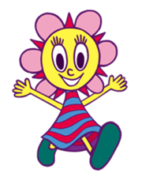

Characters
PaRappa and Friends

PaRappa: The hip hop hero of the series. He's an energetic dog who wants to win the heart of his crush, Sunny Funny, but has to overcome multiple challenges to do so. He never gives up, and his catchphrase is "I gotta believe!".
Sunny Funny: An anthropomorphic flower who is also PaRappa's crush and eventual love interest with a bright personality. She loves gardening and cooking, although she is terrible at the latter.

PJ Berri: One of PaRappa's best friends. While he's usually laid-back, eating and sleeping his way through life, his cool DJ PJ persona comes through once the night starts.

Katy Kat: Another of PaRappa's closest friends. She's a very fashionable cat who acts like the big sister of PaRappa's group and enjoys fashion, shopping and poetry.
The Rival

The narcisstic heir of a immensely large business conglomerate, and PaRappa's rival for the affection of the lovely Sunny Funny. He is very wordy and very willing to do exaggerated antics, which drives many away from him.
The Teachers
Chop Chop Master Onion: The one and only karate teacher of the Fruits Dojo, and the first teacher PaRappa meets in the game. He is a very composed man, and is admired and respected by his disciples.

Instructor Mooselini: The mean driving instructor at U-Drive-U, from a family of similarly mean instructors. Due to this, she has very high standards for whether someone can pass her test or not.

Prince Fleaswallow: The owner of PaRappa Town's flea market. He comes from Jamaica, and can be considered to be a hippie due to his dressing and mannerisms. He also thinks he can sell any kind of junk possible.

Cheap Cheap the Cooking Chicken: The host of a
popular cooking show on TV, who helps PaRappa make a cake.
Her deameanor is usually gentle, but when she gets mad, she means
it.

MC King Kong Mushi: The most beloved MC in all of PaRappa Town. When he rises upon the stage, it turns into a big funky party. He is also looked up to by PaRappa.